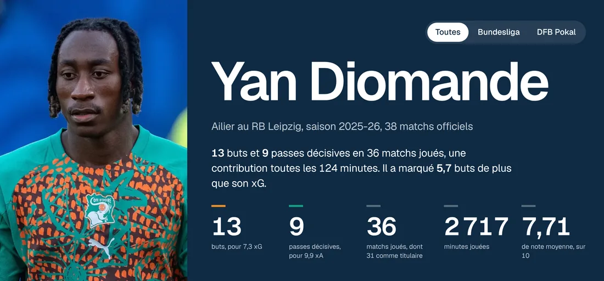
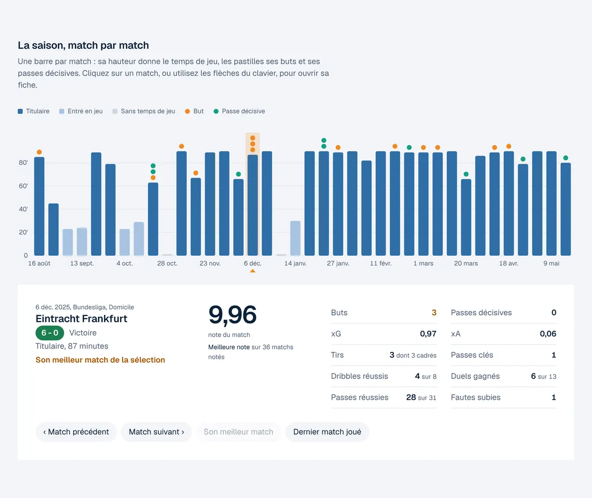
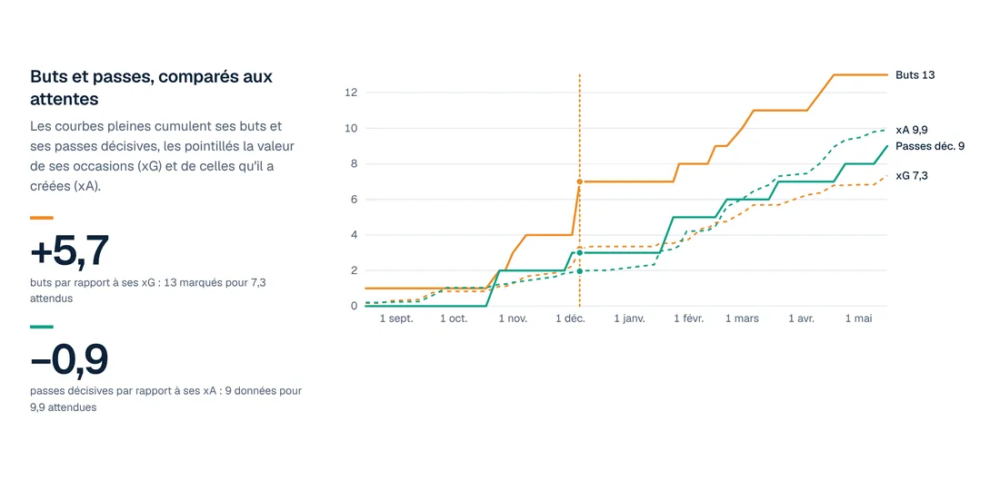
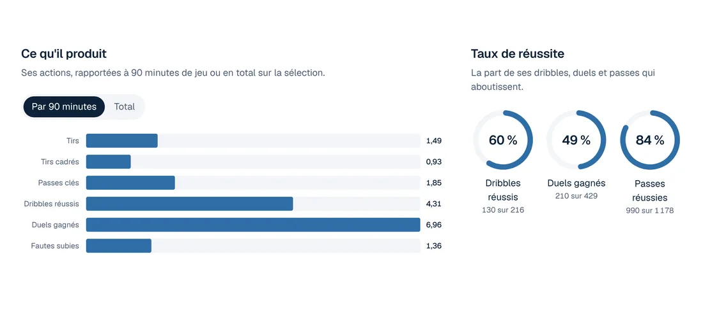
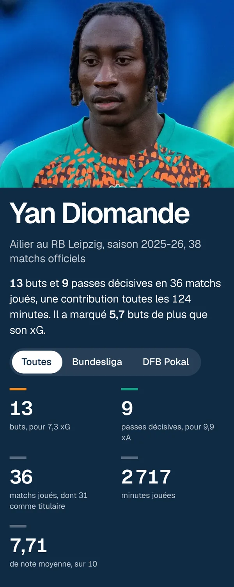

.jpg){kind=link}
Chiffres clés de la saison 2025-26
| Matchs officiels suivis (Bundesliga et DFB Pokal) | 38 |
| Matchs joués, dont titulaire | 36, dont 31 |
| Minutes jouées | 2 717 |
| Buts, pour un total de xG de | 13 pour 7,3 |
| Passes décisives, pour un total de xA de | 9 pour 9,9 |
| Requêtes à l'API pour une saison complète | environ 45 |
| Tests automatisés (pytest) | 24 |
Pourquoi ce projet
Un total de fin de saison ne dit pas tout. Treize buts peuvent venir d'un joueur régulier ou de quelques matchs exceptionnels, et d'occasions faciles ou difficiles. Je voulais voir la saison de Yan Diomande match par match, et comparer ce qu'il a réellement produit à ce que ses occasions laissaient attendre.
Son arrivée au Real Madrid ajoute une question : son impact se maintiendra-t-il dans une nouvelle équipe ? Le projet est conçu pour accueillir une seconde saison sans rien reconstruire.
Le problème se transpose directement au suivi d'une activité :
| Dans le football | Dans une entreprise |
|---|---|
| Buts et passes décisives | Ventes réalisées |
| xG et xA, la valeur des occasions | Ventes attendues d'après le pipeline commercial |
| Écart entre buts et xG | Écart entre réalisé et prévisionnel |
| Statistiques par 90 minutes | Indicateurs ramenés à l'heure ou au client |
| Moyenne sur les cinq derniers matchs | Moyenne mobile, pour lire la tendance |
| Un nouveau club | Un nouveau marché ou une nouvelle équipe |
Fonctionnement
- Choix de la source. API-Football ne donne pas les saisons récentes dans son offre gratuite, Understat interdit l'accès automatisé dans son fichier robots.txt, et je ne contourne pas les protections contre les robots. J'ai retenu l'offre gratuite de Highlightly : 100 requêtes par jour, et pour chaque match un box score avec les statistiques individuelles, xG et xA compris.
- Identifiants. Le club et le joueur sont retrouvés par leur nom exact, pour éviter la réserve du club ou un homonyme.
- Collecte. Deux requêtes donnent le calendrier de la saison, puis une requête par match terminé récupère son box score. Une saison complète coûte environ 45 requêtes, puis deux ou trois par semaine. Un match déjà archivé n'est jamais redemandé.
- Traçabilité. Chaque réponse brute est archivée avec son empreinte SHA-256. Les tables se reconstruisent à partir de cette archive, sans rappeler l'API.
- Modèle de données. Un modèle en étoile : une table de faits par match du joueur (statut, minutes, note, statistiques), reliée aux matchs et aux compétitions, et un journal des fichiers ingérés.
- Automatisation. GitHub Actions lance les tests, l'ingestion et l'export, puis enregistre les nouvelles données dans le dépôt. Un garde-fou arrête l'ingestion avant d'épuiser le quota, et la clé de l'API reste dans un secret, jamais dans le code.
- Restitution. Un tableau de bord interactif (HTML, CSS, JavaScript et D3.js) lit le fichier exporté, une ligne par match officiel, et fait tous ses calculs dans la page.
Merci à Kevin Rosamont Prombo, Lead Analytics Engineer, qui m'a bien orienté en partageant sa méthode et son script pour récupérer les données d'un match.
Résultats de la saison 2025-26
En 36 matchs joués, Yan Diomande a marqué 13 buts et donné 9 passes décisives, soit une contribution toutes les 124 minutes. Sa note moyenne est de 7,71 sur 10.

La saison, match par match
Chaque barre est un match : sa hauteur donne le temps de jeu, les pastilles ses buts et ses passes décisives. Un clic sur une barre, sur un point d'une courbe ou sur une ligne du tableau ouvre la fiche du match. Son meilleur match : 9,96 de note et 3 buts lors de la victoire 6-0 contre l'Eintracht Francfort, le 6 décembre 2025.

Buts et passes, comparés aux attentes
Ses buts dépassent nettement la valeur de ses occasions : 13 buts pour 7,3 xG, soit 5,7 de plus. Ses passes décisives suivent au contraire la qualité des occasions qu'il a créées : 9 pour 9,9 xA. Un écart aussi large sur une seule saison peut venir de sa finition comme d'une part de réussite. La saison suivante dira s'il se maintient.

Ce qu'il produit
Ramenées à 90 minutes, ses actions dessinent un ailier qui provoque : 4,3 dribbles réussis et 7,0 duels gagnés par 90 minutes. Il réussit 60 % de ses dribbles (130 sur 216), 84 % de ses passes (990 sur 1 178) et gagne 49 % de ses duels (210 sur 429). Une autre section suit sa note match après match, avec sa moyenne sur les cinq derniers matchs.

Conception du tableau de bord
Le tableau de bord reprend l'identité de ce portfolio : bleu marine, police Geist, fond clair. Une idée tirée du sujet structure la page : l'orange et le vert du maillot ivoirien marquent ses buts et ses passes décisives, dans chaque graphique.
La frise se parcourt au clavier, la page propose un mode sombre et coupe ses animations si l'utilisateur a demandé à les réduire. Je l'ai vérifiée sur des captures à 1 440, 640 et 390 pixels de large et en mode sombre, puis en testant chaque interaction.

Contrôle qualité
J'ai comparé les chiffres du pipeline à une source publiée indépendante, la fiche du joueur sur The Analyst.
| Bundesliga 2025-26 | Pipeline | The Analyst |
|---|---|---|
| Matchs joués | 33 | 33 |
| Buts | 12 | 12 |
| Passes décisives | 8 | 8 |
Le tableau de bord, filtré sur la Bundesliga, retrouve les mêmes chiffres.
Trois règles de lecture de la source. Un xG vide quand il n'a pas tiré vaut 0. Une expulsion compte le rouge direct comme le second jaune. Un box score vide est marqué « données indisponibles » : une absence de données n'est jamais comptée comme une absence du joueur.
Tests. Dans GitHub Actions, 24 tests pytest tournent sans réseau avant chaque ingestion. S'ils échouent, aucune donnée n'est enregistrée.
Limites et suite
- Une seule source, dans son offre gratuite : certains résultats peuvent y être masqués. Chaque box score vide est signalé dans le journal d'ingestion.
- Les notes sont celles de la source, sur son échelle. Ce n'est pas une note officielle.
- Le tableau de bord lit un fichier exporté : il faut le remplacer après chaque ingestion.
- Prochaine étape : ajouter sa saison 2026-27 au Real Madrid. J'attends qu'il ait disputé davantage de matchs pour que l'analyse soit solide. Le pipeline et le tableau de bord sont déjà prêts à recevoir une seconde saison.
- Piste à l'étude : situer ses chiffres par rapport aux autres ailiers des cinq grands championnats européens.
Données : Highlightly Football API, offre gratuite, statistiques individuelles de chaque match. Contrôle : fiche du joueur sur The Analyst. Photo : Bryan Berlin / WikiPortraits, Wikimedia Commons, licence CC BY-SA 4.0, recadrée ; elle apparaît aussi dans les captures de l'en-tête. Projet personnel non commercial, sans lien avec le joueur ni avec ses clubs.